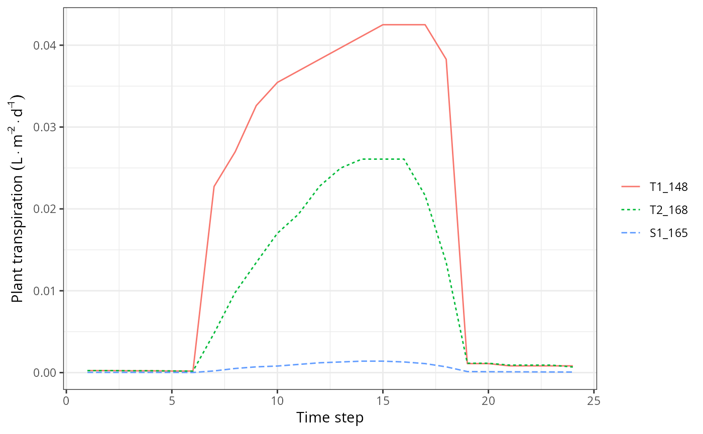

plot.spwb_day.RdFunctions to plot the subdaily simulation results of spwb_day, growth_day or the transpiration calculations of transp_transpirationSperry.
# S3 method for growth_day
plot(x, type="PlantTranspiration", bySpecies = FALSE,
xlim = NULL, ylim=NULL, xlab = NULL, ylab = NULL, ...)
# S3 method for spwb_day
plot(x, type="PlantTranspiration", bySpecies = FALSE,
xlim = NULL, ylim=NULL, xlab = NULL, ylab = NULL, ...)
# S3 method for pwb_day
plot(x, type="PlantTranspiration", bySpecies = FALSE,
xlim = NULL, ylim=NULL, xlab = NULL, ylab = NULL, ...)An object of class spwb_day, growth_day or pwb_day.
The information to be plotted (see details).
Allows aggregating output by species, before drawing plots. Aggregation can involve a sum (as for plant lai or transpiration) or a LAI-weighted mean (as for plant stress or plant water potential).
Range of values for x.
Range of values for y.
x-axis label.
y-axis label.
Additional parameters for function plot.
The following plots are available for spwb_day and pwb_day:
"LeafPsi":Leaf water potential (for shade and sunlit leaves).
"LeafPsiAverage":Average leaf water potential.
"RootPsi":Root crown water potential.
"StemPsi":(Upper) stem water potential.
"StemPLC":(Average) percentage of loss conductance in the stem conduits.
"StemRWC":(Average) relative water content in the stem.
"LeafRWC":Relative water content in the leaf.
"StemSympRWC":(Average) relative water content in the stem symplasm.
"LeafSympRWC":Relative water content in the leaf symplasm.
"SoilPlantConductance":Overall soil plant conductance (calculated as the derivative of the supply function).
"PlantExtraction": Water extracted from each soil layer.
"PlantTranspiration": Plant cohort transpiration per ground area.
"TranspirationPerLeaf": Plant cohort transpiration per leaf area.
"PlantGrossPhotosynthesis": Plant cohort gross photosynthesis per ground area.
"GrossPhotosynthesisPerLeaf": Plant cohort gross photosynthesis per leaf area.
"PlantNetPhotosynthesis": Plant cohort net photosynthesis per ground area.
"NetPhotosynthesisPerLeaf": Plant cohort net photosynthesis per leaf area.
"LeafTranspiration": Instantaneous transpiration per leaf area (differentiates sunlit and shade leaves).
"LeafGrossPhotosynthesis": Instantaneous gross photosynthesis per leaf area (differentiates sunlit and shade leaves).
"LeafNetPhotosynthesis": Instantaneous net photosynthesis per leaf area (differentiates sunlit and shade leaves).
"LeafAbsorbedSWR": Absorbed short wave radiation per leaf area (differentiates sunlit and shade leaves).
"LeafNetLWR": Net long wave radiation per leaf area (differentiates sunlit and shade leaves).
"LeafCi": Leaf intercellular CO2 concentration (differentiates sunlit and shade leaves).
"LeafIntrinsicWUE": Leaf intrinsic water use efficiency, i.e. the ratio between instantaneous photosynthesis and stomatal conductance (differentiates sunlit and shade leaves).
"LeafVPD": Leaf vapour pressure deficit (differentiates sunlit and shade leaves).
"LeafStomatalConductance": Leaf stomatal conductance to water vapour (differentiates sunlit and shade leaves).
"LeafTemperature": Leaf temperature (differentiates sunlit and shade leaves).
"Temperature": Above-canopy, inside-canopy and soil temperature.
"CanopyEnergyBalance": Canopy energy balance components.
"SoilEnergyBalance": Soil energy balance components.
"PlantWaterBalance": Difference between water extraction from the soil and transpired water per ground area.
"WaterBalancePerLeaf": Difference between water extraction from the soil and transpired water per leaf area.
And the following plots are additionally available for growth_day:
"GrossPhotosynthesis": Gross photosynthesis rate per dry weight.
"MaintenanceRespiration": Maintenance respiration cost per dry weight.
"RootExudation": Root exudation rate per dry weight.
"LabileCarbonBalance": Labile carbon balance per dry weight.
"SugarLeaf": Sugar concentration in leaves.
"StarchLeaf": Starch concentration in leaves.
"SugarSapwood": Sugar concentration in sapwood.
"StarchSapwood": Starch concentration in sapwood.
"SugarTransport": Phloem sugar transport rate.
Only for soil plant water balance simulations using transpirationMode = "Sperry". This function can be used to display subdaily dynamics of corresponding to single days on spwb runs, if control option subdailyResults is set to TRUE. See also option subdaily in plot.spwb.
#Load example daily meteorological data
data(examplemeteo)
#Load example plot plant data
data(exampleforestMED)
#Default species parameterization
data(SpParamsMED)
#Initialize control parameters
control = defaultControl("Granier")
control$ndailysteps = 24
#Initialize soil with default soil params (2 layers)
examplesoil = soil(defaultSoilParams(2), W=c(0.5,0.5))
#Switch to 'Sperry' transpiration mode
control = defaultControl("Sperry")
#Simulate one day only
x2 = forest2spwbInput(exampleforestMED,examplesoil, SpParamsMED, control)
d = 100
sd2<-spwb_day(x2, rownames(examplemeteo)[d],
examplemeteo$MinTemperature[d], examplemeteo$MaxTemperature[d],
examplemeteo$MinRelativeHumidity[d], examplemeteo$MaxRelativeHumidity[d],
examplemeteo$Radiation[d], examplemeteo$WindSpeed[d],
latitude = 41.82592, elevation = 100,
slope= 0, aspect = 0, prec = examplemeteo$Precipitation[d])
#Display transpiration for subdaily steps
plot(sd2, "PlantTranspiration")
